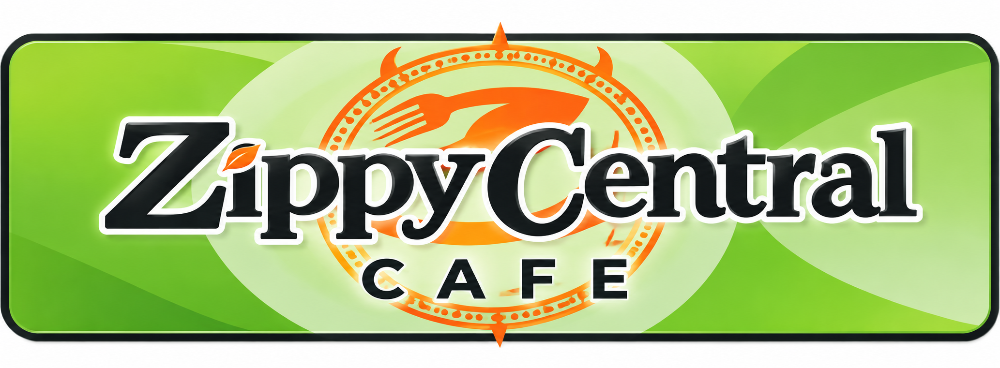
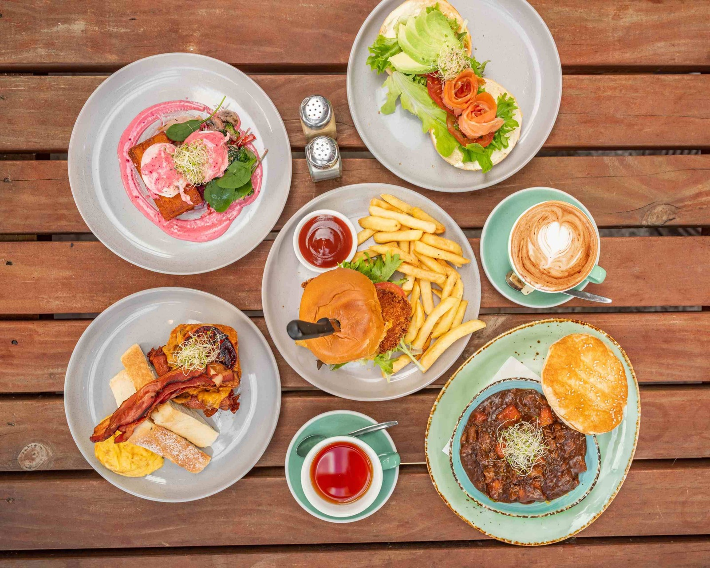
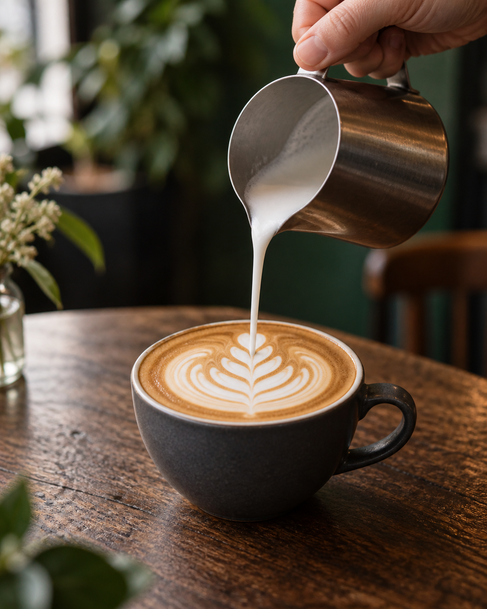

TAKE IT WITH YOU
Pick it up.
Choose your favourites right here on our website, with collection from 1153 Pukuatua Street.
Explore pickup orderingProposed flow: choose your food, review your basket, then arrange collection.

Order onlineYour morning coffee. Your long lunch.
Your favourite little corner of Rotorua.

Right here on Pukuatua Street, there’s a spot for early birds, long-lunch lovers and anyone who could use a really good coffee.
Retro chairs. Colourful corners. A proper feed. Settle into Zippy’s for the kind of easy-going café stop that turns into a little longer.
Explore our proposed direct ordering experience.
Choose your food, then pickup or delivery.
Choose your favourites right here on our website, with collection from 1153 Pukuatua Street.
Explore pickup orderingProposed flow: choose your food, review your basket, then arrange collection.
Build your order directly on the website and explore the proposed delivery option.
Explore delivery orderingDelivery areas, fees and timing are still to be agreed with the café.
Made with Coffee Supreme. Best enjoyed with something from the cabinet and a little time to yourself.
See you for a coffee
Local or just passing through?
There’s a place for you here.
Monday to Sunday · Dinner from 5pm
Public holiday hours may vary.